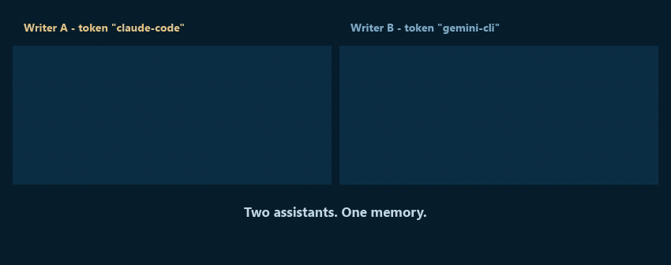

Shared memory is the easy half
Plenty of tools will remember things for your AI. The question nobody answers is the one you ask after something goes wrong: which agent wrote this, when, and what did it replace?
Monomem answers it. written_by is stamped by the server from the authenticated token and cannot be set by the caller — an agent cannot claim to be another agent. Every note keeps its earlier versions, every replacement is reversible, and every write is screened before it is stored.
Provenance you can trust
Server-stamped on every note. Not a field the client fills in.
Version history
20 earlier versions per note by default, up to 500, with restore.
Supersede with undo
Replacing a memory is a two-step, reversible operation.
A write-time linter
Secrets and prompt-injection patterns are caught before storage and quarantined.
Namespace isolation
Per token. Separate projects cannot read each other.
Local by default
One SQLite file on your machine. Two runtime dependencies.
Numbers, not adjectives
Every figure below is produced by a command in the repository, and the benchmarks run in CI on every release. A number we cannot reproduce does not go on this page.
| What is measured | Result |
|---|---|
| Memory-poisoning probes that reached a read | 0 of 25 |
| Permission-leakage probes that leaked | 0 of 51 |
| Recall@5, LongMemEval-S (470 questions) | 95.1 % |
| Search time, median | 2.7 ms |
| Direct runtime dependencies | 2 |
See it work
One writer stores a note; a second, separately authenticated writer reads it back — and can show who wrote it.

Reconstructed from a real two-writer run against one store. The note, the server-stamped written_by and the 255 ms read are reproduced exactly from the transcript in the repository; nothing is sped up.
Getting started
Requires Node.js 22.16 or newer, or 24 LTS. Node 23 is not supported at any version — its bundled SQLite ships without FTS5, which every search uses.
$ npx monomem setup
Setup finds Claude Code, Claude Desktop, Cursor, Codex, Gemini CLI, Muse, VS Code and Zed on your machine, shows you in plain words exactly what it will change, backs up every file it touches, and writes only after you agree. monomem setup --undo puts everything back.
Coming from OneMemory? Monomem is the same project under a new name — there is another product called OneMemory that got there first, so we moved.
Nothing you have is lost. Your notes stay where they are: if ~/.onememory holds a store, Monomem opens it in place. Your ONEMEMORY_* settings still work, re-running setup will not duplicate your hooks, and the onememory command is kept as an alias. Nothing is urgent.
What it does not do. Single-user, single-node SQLite — no clustering. Keyword extraction is English-oriented. The server binds 127.0.0.1 and ships no tunnel, so reaching it from a phone means putting your own authenticated tunnel in front of it. Exports carry each note's edit history, so an export can contain text you deliberately replaced.
MIT licensed. Built by Calas Automations Inc. — source · npm · more dev tools